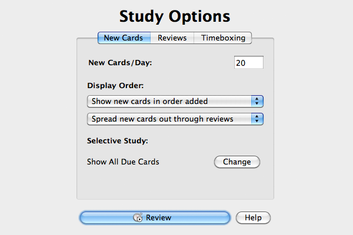
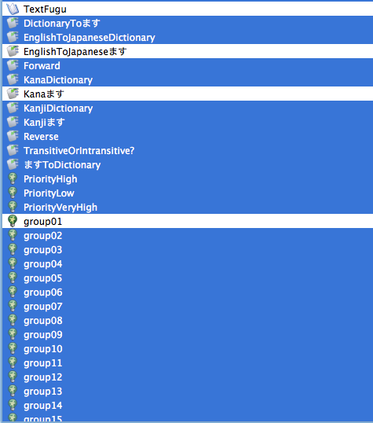

Using The Ultimate Verbs Vocab List
“Let no feeling of discouragement prey upon you, and in the end you are sure to succeed.” - Abraham Lincoln
The first “Ultimate” vocab list you’ll be looking at is the verbs one. Verbs are awesome and one of the most useful things you can know (out of nouns, adjectives, and verbs). Verbs are where all the action takes place, meaning if you don’t know the verbs, you don’t know what’s going on.
Now, because this list is so long (it has 260 items to learn), we’ll need to add a few tricks to our arsenals in order to make it a lot more manageable.
First of all (and this should make things better already), you should know around 50 of these (this list contains verbs you’ve learned in the past as well). Secondly, it’s only expected of you to get through and learn the vocab words in these “Ultimate” lists by the end of Season 3. You don’t have to know everything immediately / by the end of this chapter. You have quite a bit of time to get things done. Of course, you won’t be able to wait until the last minute. You’ll have to learn these verbs little by little as you go through Season 3. Season 3 lessons will use the verbs from this list, which should help you to learn them and I’ll be recommending to you what parts of the deck you should be learning before moving on to the next chapters. If you keep up and you are consistent, you shouldn’t have any problem. If you wait to the last minute and don’t study a little bit every day, it’s going to be difficult. I’ll do the best I can to tell you exactly what you need to do, but it’s your job to actually do it!
How To Use This List
In the past, I’ve just given you Anki decks and you’ve studied them. I never told you about tags, and I never broke up my lists so they could be studied a little at a time (though, technically you can do this to any of the Anki decks on your own, if you want).
This list is a lot different. Each vocab word has a lot of information associated with it which can be used to make a card. Also, I’ve tagged each card with tags that you can pick and choose from. If you pick the “Transitive” tag, for example, you’ll be able to only study “Transitive” verbs if you want (don’t worry if you don’t know what “Transitive” means yet, we’ll get there). Also, you can choose to study the verbs in ます (which is what you’ll do now) or Dictionary Form (what you’ll do later). There are many many combinations that you can do with this deck, but I’m going to start off by telling you which combinations are going to be best for you at this particular level. Here’s what you’ll do.
1. Download The List / Vocab Sheets
There are a couple of things to download. First, you should download the Anki deck so you can follow along with the instructions on how to use it. Hopefully this will blow your mind.
Ultimate Verbs on Anki
Along with that, you’ll want the list of words so you can look them up as you go through lessons (you’re not going to know all the words yet when you get to them in a lesson). You have two choices with this deck. Because this deck has so much information in it, I’ve made it available in Excel (which you can always upload to Google Docs if you don’t have it – that’s what I do) or PDF format. There are quite a few columns, and you’ll learn about them over time. The only ones that are important to you right now should be “v.masu reading” (the verb written in kana), “romaji” (not for learning the word, just for looking up the word), and “meaning” (to know what the word means, and also to look words up if you sort by this column).
Ultimate Verbs Vocab List (PDF)
Ultimate Verbs Vocab List (Excel)
Other columns, like tran/intran, verb-type, either column with the words in kanji, and dictionary form (v.dict) can be ignored for now. You’ll learn about transitive / intransitive verbs, dictionary form, and of course the kanji later on, some much sooner than others. I just wanted to make sure it was all there in one place so you’d be able to use the same sheet for all those different things.
2. Selecting Tags
The next step you’ll want to take on Anki is to open the deck up and get yourself to the study options page (depending on your operating system, this may look a little different, but should be similar enough).

From here, you’ll want to click “change” next to “Show All Due Cards.” We’re going to take this 260 vocab words (and 2000+ cards that were created to study these words) down to a much more manageable size.

This’ll take a little bit of clicking at first, but once you have it all set up, things will be beautiful. Go down to the text that says “Hide cards with any of these tags:” and check that box.
You’ll want to check everything except the following tags:
- TextFugu
- EnglishToJapaneseます
- Kanaます
- group01
- suru
- type1
- type2
- type3
- vi
- vt
It’ll look something like this – also make sure you click the “Hide Cards with any of these tags” button that’s right above it.

By doing this, Anki will only show you the “group 1″ words (limits it to ten words) in kana (not kanji) and test you on kana→English and English→kana. It basically just takes something unmanageable all at once and breaks it up into smaller chunks that will make this list a lot easier to get through.
After choosing everything except these tags, you should be ready to go.
3. Start Studying!
You’ll want to get started right away and try to learn as many new group01 verbs as you can before moving on to the actual lesson. If you tend to have trouble with vocab words, you can jump to the next page right now before starting (it has some tips of learning vocab). Either way is fine with me as long as you start studying this list either now or after you read the next page.
We’ll break the Ultimate Verbs List up in other ways as the season progresses, and through that you’ll become both a master in Anki and a master in vocabulary. For now, keep it simple and stick with these tags.